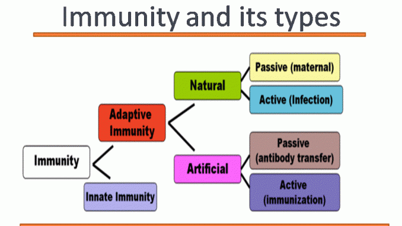
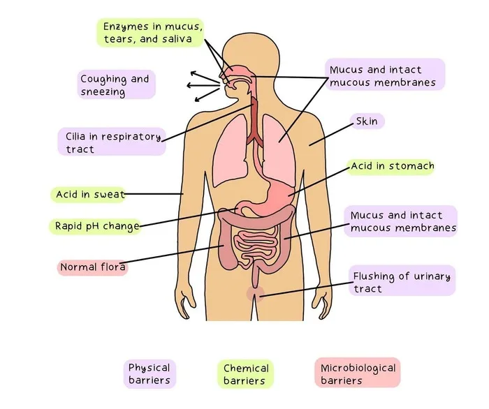
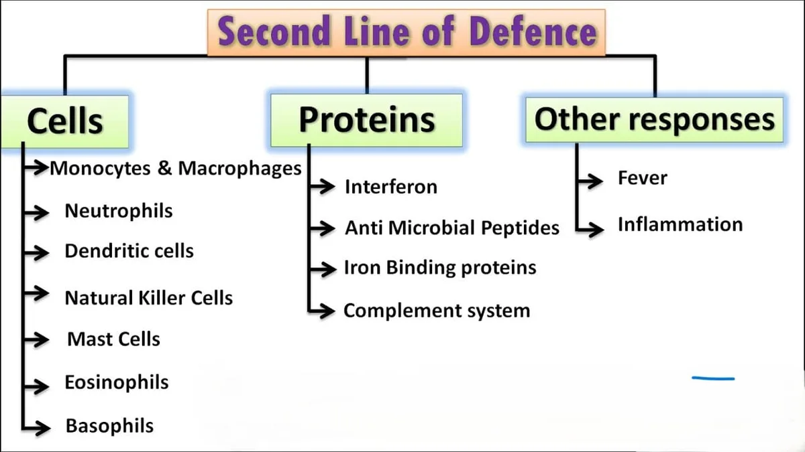
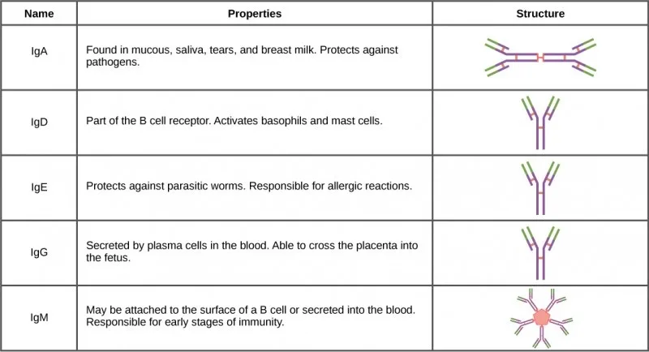

Expanded Nursing Uganda Explanation
Terms used in Pharmacology should be reviewed through safe maternal and newborn assessment, early recognition of danger signs, respectful communication and timely referral. Connect the definition to vital signs, bleeding, fetal or newborn wellbeing, patient education and local protocol requirements.
Contents, 13 sections (tap to expand)
01 Definition And Nursing Meaning
Terms used in Pharmacology is part of pharmacology, the study of medicines and their safe use in patient care. For Nursing Uganda learners, the topic should always be tied to assessment, the nursing process, patient education, monitoring and professional accountability.
In Certificate in Midwifery - CM 212: Midwifery I & Pharmacology I, study this topic by asking three questions: what does the medicine or drug group do, what patient factors change its safety, and what must the nurse monitor before and after administration?
02 Core Concepts
- Pharmacology links medicine action with patient condition and expected outcomes.
- Safe administration depends on correct patient, medicine, dose, route, time, documentation and evaluation.
- Clinical judgement is needed when age, pregnancy, organ function, allergies or interactions increase risk.
- Patient education improves adherence and helps detect adverse effects early.
03 Nursing Assessment Focus
- Confirm indication, allergies, current medicines and baseline observations.
- Check dose, route, timing and contraindications before administration.
- Evaluate response and document findings after the medicine is given.
04 Safe Administration And Monitoring
- Use the medication rights and pause when the order, patient condition or available medicine does not match.
- Check high-risk medicines, unfamiliar doses and calculations with a competent colleague or prescriber according to local policy.
- Monitor the patient at the time the medicine is expected to begin working, not only at the end of the shift.
- Document the medicine, dose, route, time, relevant observations, patient education and response.
Escalate immediately if the patient develops breathing difficulty, collapse, severe allergic features, uncontrolled bleeding, marked confusion, convulsions or any rapidly worsening condition.
05 Nursing Process Application
- Assessment: identify why the medicine or drug group is needed, the patient's baseline condition, allergies, current medicines and risk factors.
- Planning: set a clear expected outcome, such as reduced pain, controlled blood pressure, improved infection signs or absence of adverse effects.
- Implementation: administer safely, explain the medicine in simple language and follow facility policy for high-alert medicines.
- Evaluation: compare the patient's response with the expected effect and report poor response, toxicity or serious adverse reactions.
In general pharmacology, the nursing process prevents medicine administration from becoming a mechanical task. It keeps the focus on whether the patient is safer and improving.
06 Patient Teaching
- Explain the purpose of terms used in pharmacology in language the patient can repeat back.
- Teach the dose schedule, missed-dose advice, storage instructions and warning signs that require review.
- Discourage sharing medicines, stopping treatment early or mixing medicines with unreported herbal or over-the-counter products.
- Encourage the patient to keep follow-up appointments and bring all current medicines for review.
Good medicine teaching is practical, respectful and specific to the patient's literacy, culture, resources and home situation.
07 Uganda Practice Notes
- Use generic medicine names where possible and confirm brand names carefully because different brands may contain the same active ingredient.
- Consider stock availability, affordability, storage conditions and referral options when planning patient education.
- Follow facility protocols for controlled medicines, cold-chain items, antibiotics, injections and emergency medicines.
- Report medicine incidents and near misses honestly so the system can become safer.
08 Study Wrap
- Revise terms used in pharmacology by linking the drug group, expected effect, adverse effects and nursing checks.
- Confirm baseline observations, contraindications, interactions and monitoring needs before administration.
- Connect patient teaching to safe self-administration, adherence, storage and follow-up.
- Escalate when the medicine should be held, the dose looks unsafe or the patient deteriorates.
09 Midwifery Medicines Safety
- Before giving medicines in pregnancy, labour or puerperium, confirm the indication, gestational or postnatal stage, allergies, dose, route and prescriber instructions.
- Consider both mother and fetus or newborn when monitoring therapeutic effect and adverse effects.
- Document the medicine, dose, route, time, maternal observations, patient education and response.
- Escalate any uncertainty about safety in pregnancy, breastfeeding, labour, newborn exposure or emergency medicines.
10 Nursing Uganda Clinical Lens
Use Terms used in Pharmacology as a practical nursing topic, not only a memorized definition. Read the topic through the safety of two patients: the mother and the fetus or newborn.
- What to understand first: define terms used in pharmacology, identify the normal or expected pattern, then explain what changes when the patient is unwell.
- Why it matters in care: the nurse must recognize risk early, explain findings clearly, document accurately and know when to escalate.
- How to revise it: connect each point to assessment, nursing diagnosis or care problem, intervention, rationale and evaluation.
11 Assessment Guide
- Maternal vital signs, bleeding, pain, contractions, uterine tone and danger signs.
- Fetal or newborn wellbeing, feeding, temperature, breathing and activity.
- History of pregnancy, parity, medications, allergies, investigations and referral risks.
12 Nursing Priorities, Rationales and Outcomes
- Recognize danger signs early and escalate without delay.
- Provide respectful communication, privacy, infection prevention and clear documentation.
- Teach the mother what to monitor at home and when to return urgently.
The rationale for these priorities is patient safety: nursing actions should prevent deterioration, reduce discomfort, support recovery and create clear evidence for the next caregiver.
- Expected outcome: Mother and baby remain stable, danger signs are acted on early, and the family understands follow-up instructions.
13 Patient Teaching and Revision Check
- Explain terms used in pharmacology in simple language the patient or caregiver can repeat back.
- Teach warning signs, medicine or follow-up instructions, hygiene or lifestyle points where relevant.
- For exams, prepare a short answer using: definition, causes or risk factors, signs, assessment, management, complications and prevention.
- For ward practice, document baseline findings, actions taken, patient response and the plan for review.
Illustrations and Diagrams (7)






Related Video Lectures
Watch nursing lecture videos on YouTube for this topic. Opens in a new tab.
Watch on YouTubeExternal link: YouTube may use its own cookies and terms. Nursing Uganda is not affiliated with YouTube.